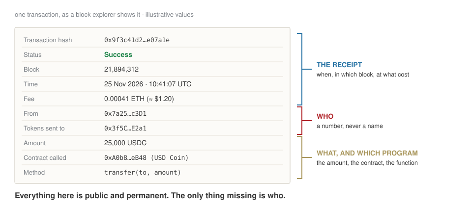
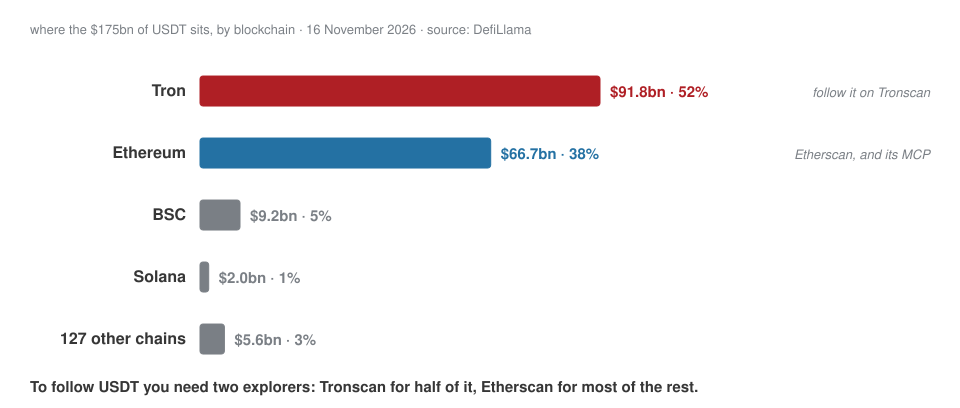
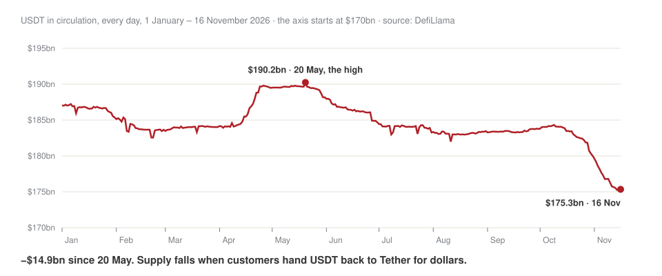

Week 8 · Wednesday 25 November 2026 · 10:00–13:00
AI for Business and FinTech · European School of Economics, Florence
| # | When | What |
|---|---|---|
| 1–5 | 23 Sep – 4 Nov | a model’s release · tokens · look first · read first · agents and harnesses ✓ |
| 6 | Wed 18 Nov | the crypto world, simply · stablecoins · the capstone ✓ |
| Mid + 7 | Thu 19 Nov · 15:00 | the oral · how a stablecoin works · the AI that reads ✓ |
| 8 | Wed 25 Nov | USDT on the chain · the AI that looks |
| 9 | Thu 26 Nov · 15:00 | an agent that pays in USDT · the AI that acts |
| 10 | Wed 2 Dec | capstone studio |
| Rev. | Wed 9 Dec | final presentation |
One thing is due today: three ideas. One of them leaves the room chosen.
A USDT is born when a verified customer wires dollars to Tether, and dies when it is handed back to Tether for dollars. In between, the dollars sit in the reserve and earn interest, for Tether.
The reserve report is a photograph of one day, signed by an accountant. Not an audit.
The AI read it after you did: eight facts with their page, three traps, every miss named.
MiCA: a dollar token in the EU needs an e-money licence. USDC has one; USDT does not.
Last week the AI read what Tether wrote. Today it looks at what USDT did.
| 10:00 | your three ideas, through the four tests |
| 10:25 | USDT as a dataset: one transfer, the chains, the supply |
| 11:00 | who can stop a dollar token: Tether’s freeze, and a French bank three weeks ago |
| 11:30 | break |
| 11:40 | lab, 50 minutes: one story, your data, your alarm written first |
| 12:30 | what the assistant got right · your capstone, chosen |
| 12:55 | close |
| idea 1 | idea 2 | idea 3 | |
|---|---|---|---|
| 1 · The source is open today | |||
| 2 · Ten cases, answered by hand | |||
| 3 · It fits in two weeks | |||
| 4 · A “no” is still a result |
Five minutes each: the decision, who takes it, and the source open on your screen. I fill the grid. We choose at 12:40, after you have looked at data yourself.
Imagine your bank published every statement in the world, forever, with each name replaced by a number. That is a blockchain, read as data.


Your salary in USDT, from the same address every month: whoever learns one payment can read all the others, and your balance.

No news story is needed to see this: the ledger shows every dollar handed back. The why is not on the ledger, and that is exactly where an assistant starts to invent.
Sources: Federal Reserve, FEDS Notes, 17 Dec 2025 · Glassnode, The Week On-chain, week 11 2023.
| Tool | What you get | Cost |
|---|---|---|
| DefiLlama | supply of every stablecoin, by chain, every day; charts as CSV | free |
| Etherscan | any Ethereum address or transfer, decoded and labelled; an MCP server for assistants | free; exports need an account |
| Tronscan | the same for Tron, where half of all USDT lives | free |
| Your assistant + a sheet | the CSV in a sheet, the question in a chat | what you already use |
When the assistant says this is Binance, the next question is: who says?
How. The USDT contract keeps a public list of blocked addresses, and only Tether can add to it. A blocked address can still receive USDT but cannot send it. Tether can then wipe that balance and issue the same amount again to the victim.
What it means. Your own key does not protect your USDT from Tether. The token is a company’s promise, and the company keeps a hand on it.
A bank can stop a payment; a blockchain cannot. The issuer of a stablecoin put that power back. Sources: the USDT contract on Etherscan; Tether, 2 Nov 2026; Bitquery via CryptoSlate.
An attacker got into Crédit Mutuel Arkéa through one of its service providers, used the bank’s own account to buy USDC and USDT, and pulled about $133m out of three exchanges between 1 and 3 November.
| where the money was | who could freeze it |
|---|---|
| in the exchange accounts, for hours | the exchange: two of them did |
| on the chain, as USDT or USDC | the issuer: Tether or Circle, if told in time |
| swapped into ETH, then Monero | nobody |
ZachXBT’s complaint was about the hours lost before anyone called. Sources: The Block, Help Net Security, 4–9 Nov 2026.
| what it does | who does it today | |
|---|---|---|
| Read the chain in English | “where did the USDC that left this address on 1 November go?” | Etherscan’s own MCP server, since August 2026: 50+ chains, 21 tools, read-only. Blockscout has one too. Session 5’s MCP, pointed at a ledger |
| Put names on addresses | ties addresses to owners from timing, funding and patterns | Arkham’s engine, with a human team checking what it finds |
| Recognise the shape | learns what laundering looks like: the path, not a list of names | Elliptic, MIT and IBM: a graph neural network trained on 122,000 labelled pieces of the bitcoin ledger |
What none of them can do: call Kraken, or Tether, at three in the morning. Freezing takes a person with a legal request. The AI saves the hours; the phone call is still a person’s.
LAB · an assistant with Etherscan’s MCP · ten minutes
On my laptop, an assistant connected to Etherscan’s official MCP server. You ask; it calls the chain.
Score every answer against Etherscan’s own page: right, wrong or unsupported. A label with no source counts as unsupported.
LAB · 50 minutes · a sheet and an assistant
LAB · paste it, fill the brackets
Here is a CSV of [series] from [date] to [date]. What happened, and on which day would you have raised an alarm? For every claim, give the row it comes from.
Then ask it about a day outside your file, and write down what it does.
It adds
It makes up
| The decision and its user | who decides what, every week, and what a mistake costs |
| The source | open on your laptop, today |
| The test | ten cases, answers found by hand, three traps |
| The rival | the tool that does no work: the peg holds, always say no, Q3 = Q2 |
| Tonight | the first thing you do |
If you chose a tool that looks, the lab you just ran was its first draft. Keep the sheet.
| By | What |
|---|---|
| Thu 26 Nov | the one-page plan, in class |
| Sat 28 Nov | the test, first: ten cases and three traps, dated |
| Mon 30 Nov | the tool, with its model card |
| Tue 1 Dec | the draft, reviewed in the studio on Wed 2 Dec |
| Sun 6 Dec | run, price, write: the memo on Turnitin |
| Wed 9 Dec | fifteen minutes, the tool live |
A narrow tool, well tested, beats a broad one nobody checked.
Tomorrow, Thursday 26 November, 15:00: your one-page plan. The decision and its user, the source, what the tool does, the test, the rival, the main risk, the steps to 6 December.
Three lines at the bottom of your lab sheet: what the ledger shows, what it cannot, and the claim the assistant made that you could not check.
Next: Thursday 26 November, 15:00. An agent that pays a supplier in USDT, and the rules that stop it.
AI for Business & FinTech · ESE Florence